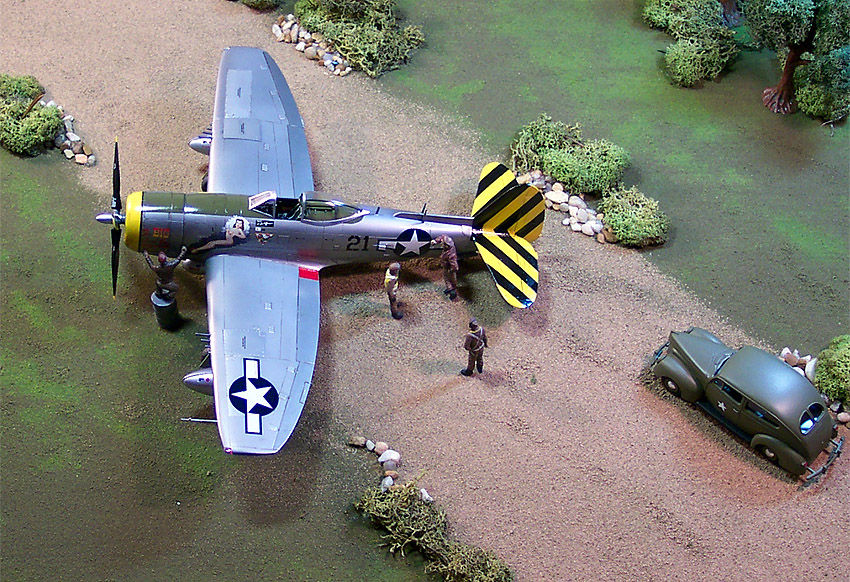

{kind=link}
{kind=link}

{kind=link}
You may click on the images above to view larger pictures
Academy Republic P-47N Thunderbolt
Kit #2155 MSRP $25.00
Model, images and text Copyright © 2004 by Matt Swan
Developmental Background
I’ve already covered the basic developmental background of the P-47 when I reviewed the Tamiya P-47D Bubble Top so I shall not repeat that here. I'd rather talk about the specifics of the N model Thunderbolt. This was the last large scale production model of this famous aircraft and was the largest, heaviest and most powerful production version. Four P-47D-27-RE airframes had been taken off the production line at Farmingdale and fitted with the Pratt & Whitney R-2800-57(C) engine driving a larger CH-5 turbo supercharger. This engine could produce a war emergency power of 2800 hp at 32,500 feet with water injection. For the first time in the Thunderbolt series fuel was carried in the wings, a 93 US gallon tank being fitted in each wing. When maximum external tanks were carried, this brought the total fuel load of the XP-47N up to an impressive 1266 US gallons. This fuel load made it possible for a range of 2,350 miles to be achieved.
The new wet wing also incorporated larger ailerons and squared-off wingtips. The engineers at Republic designed a larger dorsal fillet and installed it on the XP-47N. This proved to do the trick to offset the low speed rudder over-balance problem, however, it was not an eye-appealing solution. Certainly, the approach taken by North American and Grumman was more attractive as well as functional. Then again, no one ever accused the Thunderbolt of being pretty. In order to cope with the increased gross weight, the undercarriage of the XP-47N had to be strengthened, which increased the weight still further. The maximum weight rose to over 20,000 pounds as compared to a Zero that wieghs in at 6,000 pounds. The XP-47N took to the air for the first time on July 22, 1944. The additional horsepower allowed the N to retain its energy better than the older Thunderbolt. Perhaps the greatest performance increase was in maximum speed. Though not as fast as the stunning P-47M, the heavier N was fully 40 mph faster than the P-47D-25-RE and could generate speeds 30 mph greater than its principal rival, the Mustang.
Entering into production late in 1944, the P-47N only saw limited action in the European theater, but it did contribute heavily to the air superiority the US enjoyed in the Pacific. Scorching along at 467 mph at 32,000 ft., the N could not be caught by any fighter in regular service with any air force on earth with the single exception of its M model sibling. Flying out of le Shima, Iwo Jima and Okinawa its range of 2,350 miles enable it to provide bomber support to the B-29s attacking Japan on a daily basis in early 1945. To offset pilot fatigue on these flights that could last as long as twelve hours, the P-47N had sophisticated automated power setting controls that virtually let the pilot sit back and enjoyed the flight. At the Farmingdale plant, between December 1944 and December 1945, when the Thunderbolt line finally closed down a total of 1,667 P-47Ns were produced. The Evansville factory built 149 additional P-47Ns.
The Kit
Upon lifting the box lid we are greeted with three large poly bags holding the main sprues of parts and a single small bag with the clear parts. The first thing that comes to my attention is that the decals are not packed separately or protected in any way but are packaged with the main fuselage sprue. Fortunately they do not appear to have taken any damage. All the injection-molded pieces are made from a medium gray polystyrene and display delicately engraved panel lines and rivet detail. Specific items of interest in this kit are the single propeller, a Curtiss Electric paddle bladed unit; there are no other propeller options with the kit. The wing panels are cast in an interesting way; the injection gates are all located in areas that will not be on a finished seam. I am always paranoid about cutting sprue gates that are located on a leading edge thinking they will tear or pit and require repair later. Not on this kit – a great innovation. Another item on the wings is the open gun bays with secondary panels prescored for easy removal if you want to super-detail a gun bay. The interior detail pieces for these bays, while not Aires material are pretty nice.
The cockpit is well detailed and consists of eleven pieces. The kit offers two options on wheels; either a bulged and flattened set or an unstressed set. The kit comes with two sheets of weapons options. You have several external tank options, two bomb load choices and tube rocket launchers. There are also zero rail rocket options and this seems to be the intended method of construction as the mounting pylons for these rockets are cast in place on the wings. This is probably the worst feature of the kit because if you want to build without the rockets you’ll need to cut these buggers off and sand the connection points down. Most documentation of the N model shows it with a full fuel load and no other under wing stores. There are a total of 117 gray plastic pieces included.
The single small sprue of clear parts includes a two piece canopy, a reflector gun sight, clear parts for the wing tip marker lights and three small lenses for the formation lights. The parts are nicely clear and have nice frame detail. With these nine pieces added to the tally we now have a grand total of 126 pieces for this kit.
You may click on the images above to view larger pictures
Decals and Instructions
The instructions for this kit consist of an eight panel foldout that begins with a nice little historical background on the plane along with statistical specifications. The next five panels are devoted to nine different exploded view construction steps. There is no color code chart, rather the colors are called out in the exploded views but by name only, there are no FS numbers or paint manufacture code numbers. There is a weapons load-out chart showing many possible weapons combinations. One panel is set aside for decal placement and exterior painting instructions and the final panel is a basic parts map.
I’m not real excited about the decals that Academy has provided. The image to the right links to a larger image if you care to click on it. There are markings for one aircraft only with adequate service stencils and propeller logos for the Curtiss prop. The print registry looks to be good but I am concerned about the color density and from reports I’ve hear these decals are prone to silvering. Now I have not experienced this yet but I’m leery of it. The large wing stars have spots that are intended to be cut out to fit over the 5 inch HVAR rocket rails which means you have to find some way of filling that if built without rockets.
Conclusions
For the most part this is a very nice kit with well engineered parts. They fit together well and have no flash to be dealt with. Shortcomings of the kit are those molded in zero rails and the lack of more than one aircraft in the decal department. Overall level of detail is good, instructions are clear but the lack of a Federal Standard paint chart is annoying. If you are already familiar with building Jugs then it’s no problem but if you are new to these aircraft then you need some outside reference material.
Aires offers a basic replacement cockpit set for this model as well as an extreme detail package with cast metal and PE parts. Cutting Edge has mask sets and resin detail sets, Eduard has a bunch of stuff for it and Engines and Things has two different engine packages available. Ultracast offers three different wheel sets for it and Squadron has a nice replacement vacuform canopy. There are many nifty decal packages out there from Superscale, Three Guys Replicas, Cutting Edge and the new Pyn-Ups series from Meteor Productions. In summation, the few short falls can be overcome and really, you never can have too many Jugs now can you?
Construction
8/21/04
I’m jumping right into this one. I have not built a Jug in some time and really need an excuse to use the New Pyn-Up decals. I have the “2 Big, Too Heavy/Short Snorter” decal set and this is the perfect kit for it. Construction starts out in a very straightforward manner with the cockpit assembly first. The kit has no seatbelts so I have pulled out my sheet of Eduard USAAF PE seat belts and installed a set of those. Let me tell you, these Eduard belts are great, you get nine complete sets and that is very nice to have on the worktable. They are very well detailed and add great depth to your work.
The cockpit walls and floor were airbrushed with Model Master Medium Green then sludge washed. Tamiya acrylics were used for other details then everything was dry brushed with some steel. The dash was basic work, painted black and dry brushed with white. The cockpit went together very well and fit right into the fuselage. There was a slight amount of warpage to the fuselage but was easily corrected. The cowling interior was painted Flat Aluminum and the wheel wells and gun bays were done with Testors Zinc Chromate. I plan on using Alclad 2 as my finish paint so am very careful not to have any overspray onto the exterior surface of the model. Overspray could lift, split or buckle when I apply the Krylon Gloss Black primer and I just don't want to take any chances with this build. Here we are after the first day of work.
8/23/04
So far this has been a very pleasant build, I would have to rate this right up there with the Tamiya P-51D for ease of assembly and parts fit. The gun bays have been completed and the wings assembled. The engine has been put together and I built an ignition harness for it. This is something I should talk about a little bit. I discovered a really easy method of constructing a wiring harness that is also fast.
For the last year or so my daughter has been using a red metallic thread to sew odd stuff on her cloths with and for some reason she always leaves it out and it ends up on my modeling desk. It has been fairly annoying because it would invariable roll off to the floor and I would have to wind the thread back in place and then put it away. Today I had an epiphany. I took this spool of metallic red sewing thread and cut several inch long lengths off. I placed a drop of superglue onto my pad of post-it notes then brushed some accelerator across the cylinder heads of the engine. Each thread was lightly dipped into the glue then placed onto the head from the front. Working with one front and one rear cylinder at a time I gently pulled the threads to the backside of the engine in groups of four, secured them with another miniscule spot of superglue then trimmed the excess off. It took all of an hour to wire the entire engine and I did not have to deal with pre-bending wires or anything difficult. Next time you want to wire something up take a look at the thread selections at your local fabric store – I think you will be surprised.
The wing seams were cleaned up with some fine sandpaper and they were attached to the fuselage. Fit was very good but I think I will still need a little putty at the joint. The elevators were assembled, trimmed and sanded then attached. I spent a bit of time here making sure they set square to the fin.
Moving right along I have painted the interior of the cowling and the Turbo Supercharger intakes silver. The directions seem to indicate that the intake should be glued to the fuselage and then the cowling slid overtop it but it works better and I think was intended to be that the cowling pieces get glued together then the intake gets glued into the cowling. Now this can slide over the engine and be secured. You can click on the picture to the right to view a larger image. So far the only thing that I have been really unhappy with is the lack of a choice of open or closed cowl flaps. Regardless, she’s starting to look like a Thunderbolt.
8/28/04
I've been going over the model and making sure little details are handled like the three radio masts on the rear of the fuselage and the center tank mounts underneath. The wing tank pylons were assembled and installed - these are very well detailed pieces. Each glue joint is examined with great attention to detail, every imperfection will show when the Alclad gets put on and this is the time to fix them. I decided to install the guns into the wing leading edge at this time rather than chance getting glue on the finish later. Each gun barrel was drilled out before installation with a small Yankee drill. I’ve carefully packed damp tissue paper into each and every opening and just need to let this dry so I can give it a final rub down with my Micro Sheen cloth. I may get some paint on this yet today.
9/19/04
It’s off to the paint room we go. I’ll be using Krylon Gloss Black decanted from a rattle can and transferred to my airbrush to prime this model. The weather has been very hot and humid these last few days and that may have contributed to a slight fog that has appeared in my primer as you can see in the image to the left. You can click on that to view a larger picture. This seems to be optical in nature only as I can detect no texture variation in the paint. I have even recoated it in an attempt to get a uniform finish but it’s just not happening today. After giving the model a few days to cure I went ahead with some Alclad Aluminum and it went down very well, the fog that was visible in the black did not seem to affect the finish of the Alclad in any way, which made me very happy.
Once the base coat of Aluminum was cured I masked off the flaps, ailerons and inside gun bay access doors. These were all shot with Alclad Dark Aluminum. The landing gear doors were also done with the Dark Aluminum. Another round of masking for the outside gun bay access doors and various small panels and these were shot with Alclad White Aluminum. All the drop tanks were done with White Aluminum also. Now all my lacquer-based painting is done so the nose and tail are masked off for a coat of Testors flat yellow. A fine line is masked around the nose and shot with Tamiya Flat black then the anti-glare panel is masked. The anti-glare panel has an odd curve terminating it short of the fuselage fin and this was replicated by tracing a dime on masking tape with a razor then laying this circle cut on the model. The landing gear struts and doors were assembled and installed as soon as possible after the painting to take stresses off the belly drop tank mechanism.
10/5/04
I finished off the wheels with some dry brushed light tan to simulate some mud and dirt and those were installed. The secondary landing gear doors and actuators were glued in place next followed by the Pitot tube. Virtually all basic construction is now complete. Once everything had dried down I headed for the paint room to put a couple of coats of Future floor finish on the model. When applying Future to Alclad you can get some beading effect and a simple method to defeat that is to mix about 3 parts 50% Isopropyl Alcohol to 7 parts Future then begin airbrushing. After two good coats had been applied and allowed to cure I was ready to start with the decals.
These Cutting Edge Pyn-Up decals are great, they behaved very nicely and lifted from the backing paper very quickly. I was slightly concerned that the fine art decals would give me some trouble because they were obviously thinner than a standard decal but they slid into place very nicely and allowed for position adjustment without any trouble whatsoever. The Academy decals were another story, I used several service stencils off the kit sheet and had to actually pry each one loose from the backing paper and had to add additional water to the decal on the model to position it. I was less than thrilled with the Academy decals – I’ll tell you that for nothing. The Cutting Edge decals for the tail surfaces had a few size issues and I had to use some black paint to fill a few gaps but it was nothing serious. All decals responded well to Micro-Sol setting solution and once they had completely dried I applied another coat of Future thinned with Alcohol to seal them.
Way back at the beginning of this build I had intentionally left all the clear lenses out of the wing until the final stage of construction and that stage has arrived. The formation lights were painted on the backside; yellow, red and blue (not what the directions indicate but what my research showed). These lenses along with the landing light were intended to be placed from the interior and I had to open the holes slightly to get a good fit. The landing light hole was opened with a Xacto knife and the formation light holes were opened with a Welders Tip Drill. A little Testors Clear Parts cement and they all slid right into place. The wing tip marker lights were touched with red and green paint from the interior side and glued into place as well.
Once that last coat of Future had cured I started with some basic sludge wash to highlight the panel lines. I was careful to clean the panel interiors well as I wanted the model to have a very clean look to it. I did add a slight amount of exhaust staining beneath the fuselage with some Tamiya X-19 Smoke. Again with the Future to seal the Sludge wash and a little Polly Scale clear flat was brushed over the tires to tone them down a little. Now the canopy front windshield is glued in place with more Testors Clear Parts cement, the bubble canopy is simply dropped into place so that I may position it open or closed.
Last but not least – the propeller is dealt with. It’s tips were airbrushed with Testors flat yellow then masked with 1/8 inch strips of masking tape then painted black. The hub is done with Testors silver then the unit got a good coat of Future. The Academy decals were pried from their backing paper and placed then sealed with more Future and the propeller gets pressed into place. The fit is quite snug so no glue was used here. The gun bay access panels have a very nice fit so can be placed open or closed and there you have it, one very sexy P-47N, ready to kick some ass.

You may click on any of the above thumbnails to view larger images


{kind=link}
{kind=link}
{kind=link}
{kind=link}
{kind=link}
{kind=link}
{kind=link}
{kind=link}
{kind=link}